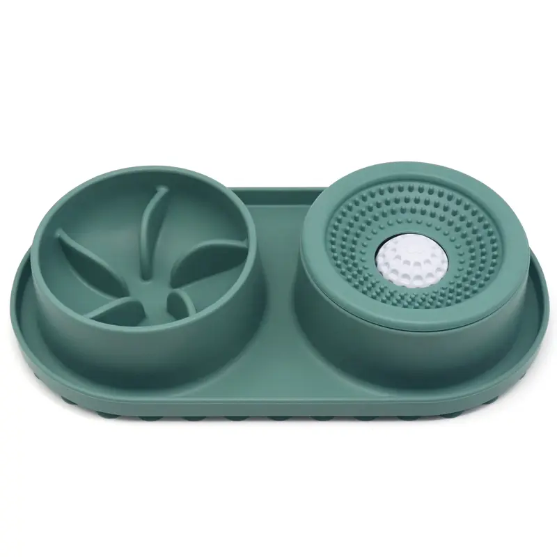
2-in-1 Slow Feeder Bowl & Lick Tray
342×177×68mm · Anti-spill tray · SKU LM-020
View Product
Adjustable Height Silicone Cat Bowl
Request a Quote
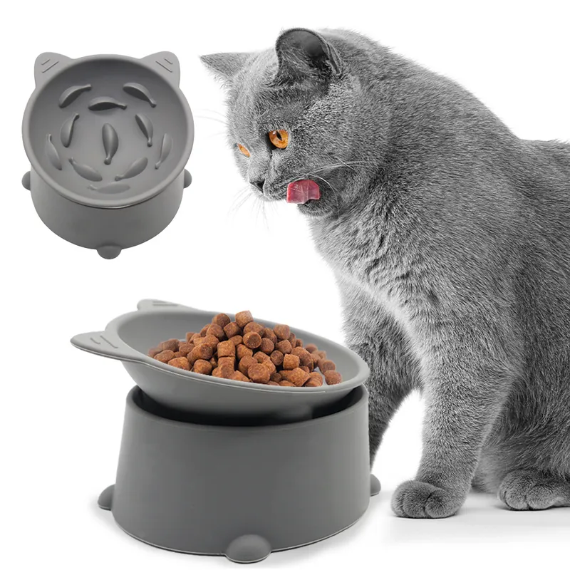
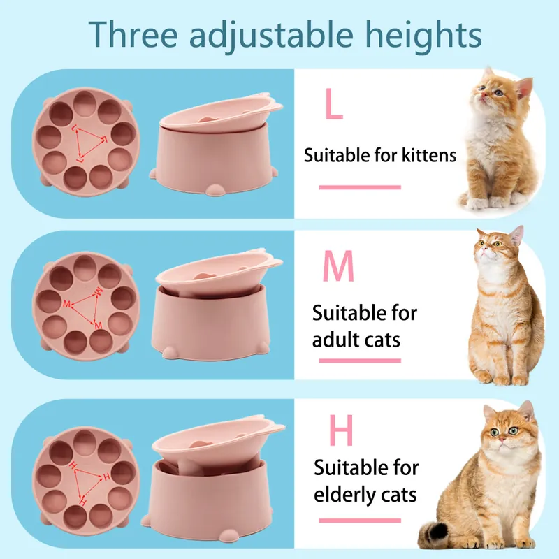
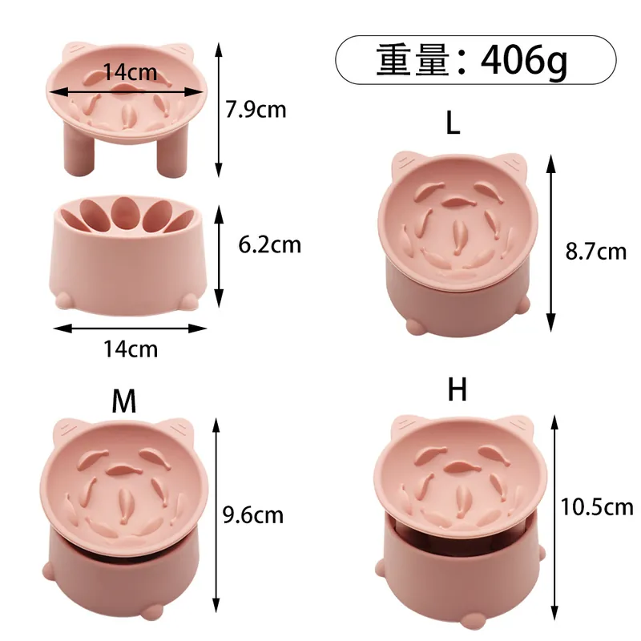
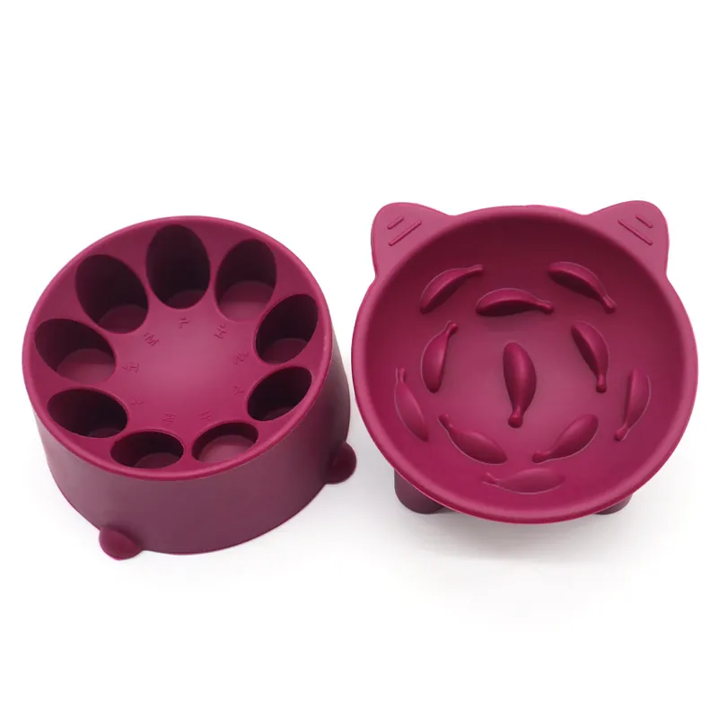
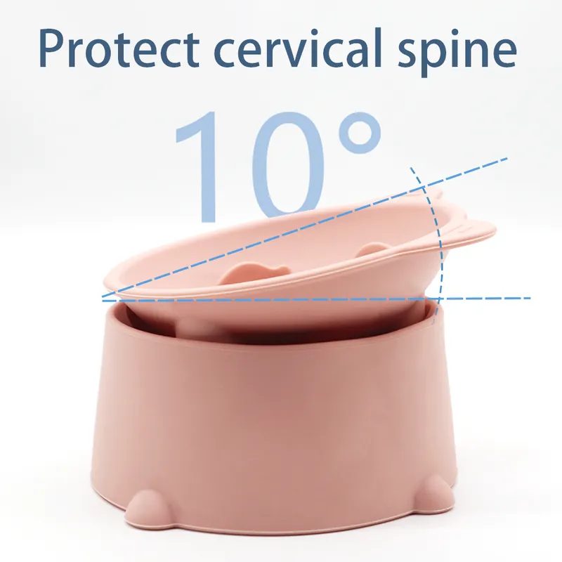
Available in 6 colors: Peachy Pink, Lilac, Mustard, Grape Purple, Navy Blue, Shadow. Custom colors available for OEM orders.
| Material | Food-contact grade silicone (BPA-free) |
|---|---|
| Bowl | Ø140 mm, 10° tilted rim |
| Base | Ø140 × 62 mm |
| Set Height | 87 mm / 96 mm / 105 mm from the table to the rim |
| Weight | Approx. 406 g per set |
| Colors | Peachy Pink, Lilac, Mustard, Grape Purple, Navy Blue, Shadow |
| MOQ | From 10 pcs (stock colours) · custom colour or logo quoted on request |
| Sample Lead Time | Approx. 7 days |
| Production Lead Time | 15–25 days after sample approval |
| Customization | Logo, color, packaging available |
| Material reports | LFGB / FDA — silicone parts; reports on request |
| Set Includes | 1 × bowl + 1 × base |
| Design | Cat-ear rim, fish-shaped ridges, moulded feet on the base |
| Height Change | Bowl legs drop into one of three slot sets in the base |
| Care | Wash after each use and dry both parts fully before refilling |
| Carton | 30 pcs / 46 × 28 × 41 cm, gross 13.4 kg |
| SKU | CB-001 |
The base has three sets of slots and the bowl has two legs. Drop the legs into the low set for kittens (87 mm), the middle set for adult cats (96 mm) or the high set for senior cats (105 mm). Lift the bowl, turn it and drop it back in to change position — the bowl itself is the same in every setting.
The bowl sits at 10° so food gathers at the lower edge instead of spreading around the rim. A cat reaches the last of a portion without pushing its nose into the side, and the cat-ear handle at the back gives a place to lift the bowl out.
Raised fish-shaped ridges break the surface into short channels. A cat has to work around them to pick up kibble or pâté, which sets a slower eating pace than a flat bowl. How much slower depends on the cat, the food and the portion size.
The base is a single silicone moulding with six small feet and a footprint wider than the bowl, so a cat leaning on the rim is less likely to push the set across the floor. It suits tile, wood and matted feeding areas.
Both parts are flexible silicone with rounded inner corners: rinse under the tap or wash by hand with warm soapy water, then dry both parts fully before refilling. The bowl lifts out of the base so it can be carried to the sink on its own.
Stock colours are peachy pink, lilac, mustard, grape purple, navy blue and shadow grey. Custom Pantone colours, embossed or printed logos and retail packaging are available for OEM orders. Sample lead time is about 7 days; production runs 15–25 days after sample approval.
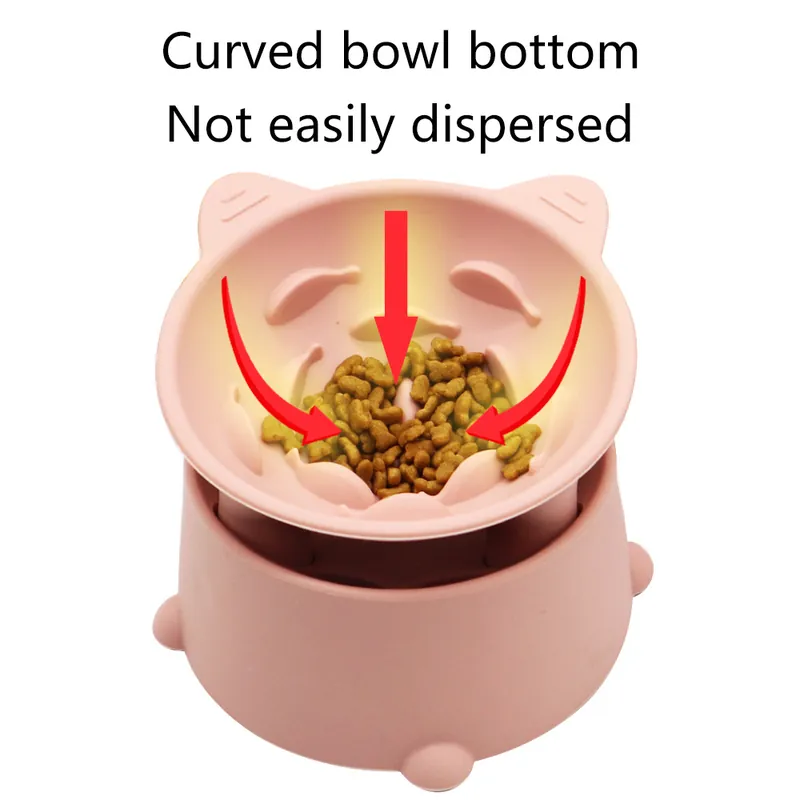
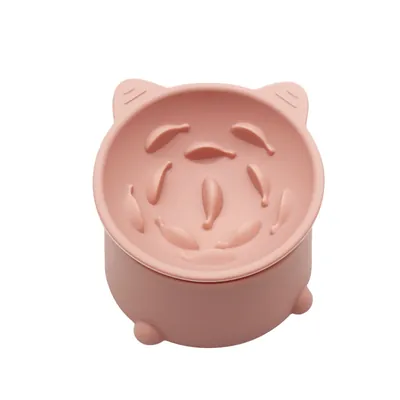
Peachy Pink
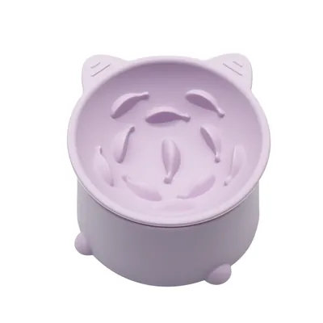
Lilac
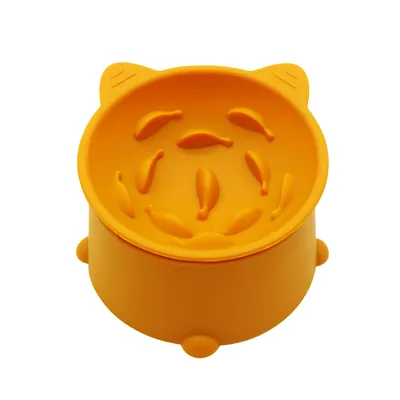
Mustard
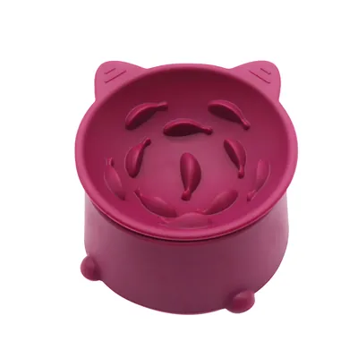
Grape Purple
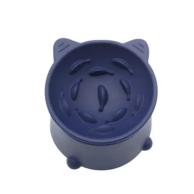
Navy Blue
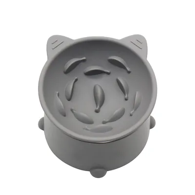
Shadow
87 mm, 96 mm and 105 mm measured from the table to the rim of the bowl. The base sets the height; the bowl is the same in all three positions.
Low for kittens and small cats, middle for adult cats, high for senior cats or any cat that eats more comfortably with the bowl raised. Some owners start in the middle and change position as the cat grows.
Yes. The bowl lifts straight out of the base, so it can be filled, washed or carried separately, and the two parts stack for storage.
The fish-shaped ridges give the cat obstacles to work around, which slows a meal compared with a flat bowl. How much it slows depends on the cat, the food and the portion size — it is not a measured feeding-time guarantee.
Yes, for pâté and shredded wet food. Very liquid food will pool at the low edge of the tilted bowl.
The silicone parts can go on the top rack of a dishwasher. Hand washing with warm soapy water works too; dry both parts fully before refilling.
From 10 pcs for stock colours. Custom colours, logo and packaging are quoted on request — send the quantity, target market and packaging you need.
Get wholesale pricing, request a sample, or discuss OEM customization — we reply within 12 hours.
Marvin Bai — Sales Manager
📧 marvin@szqidian.net
📱 +86 159 1412 0274
Shenzhen Qidian Electronic Technology Co., Ltd.